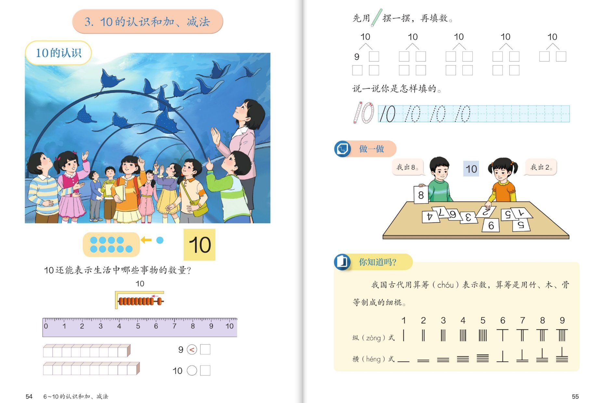
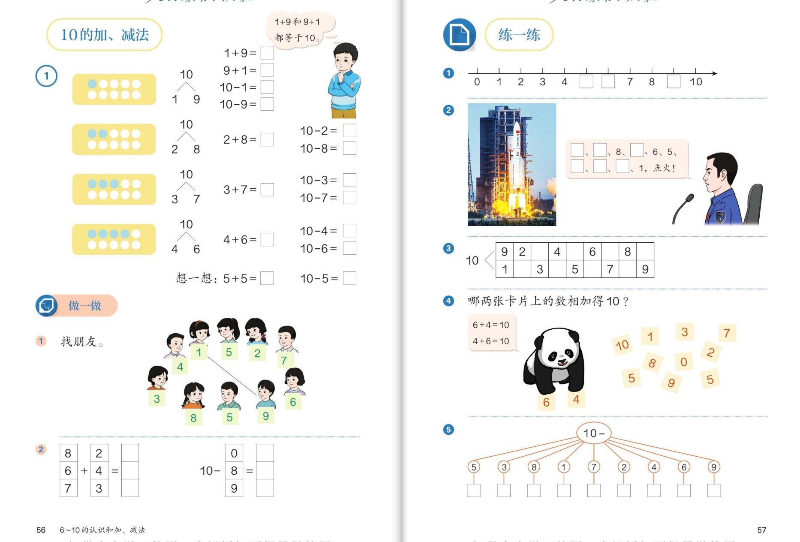
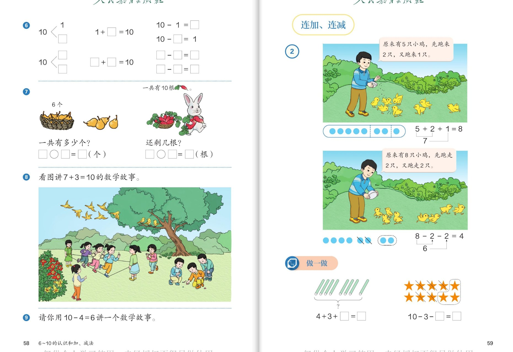
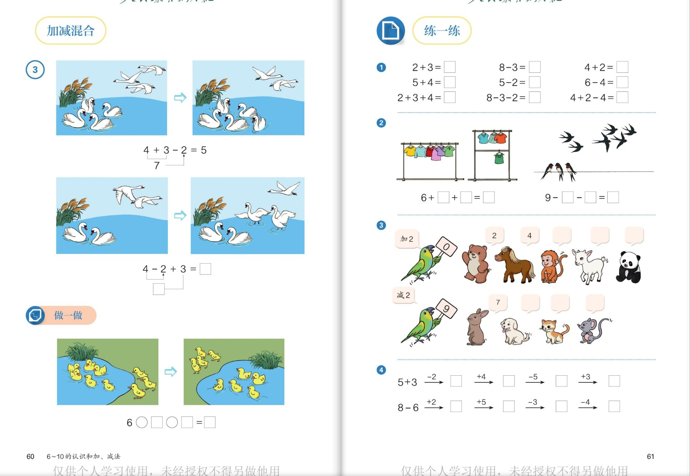
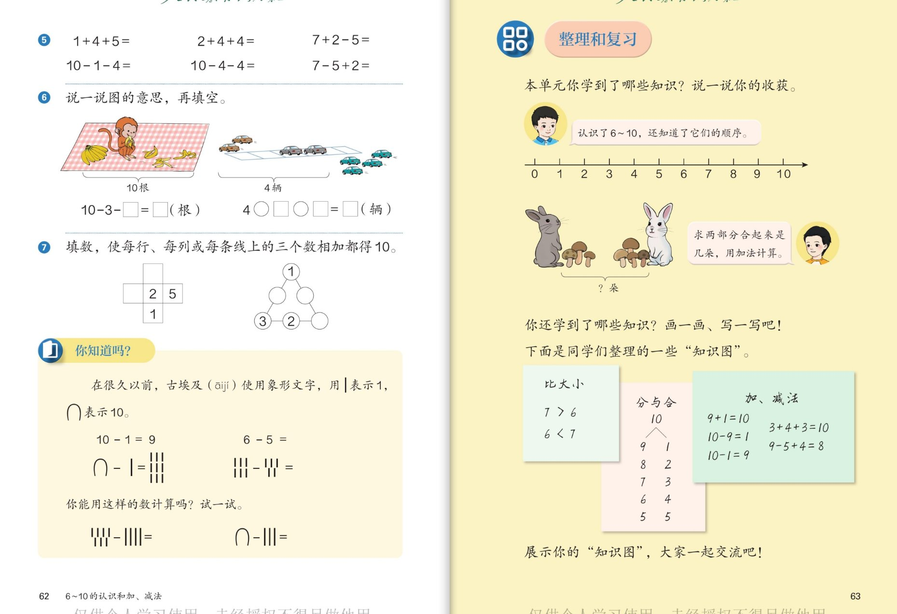
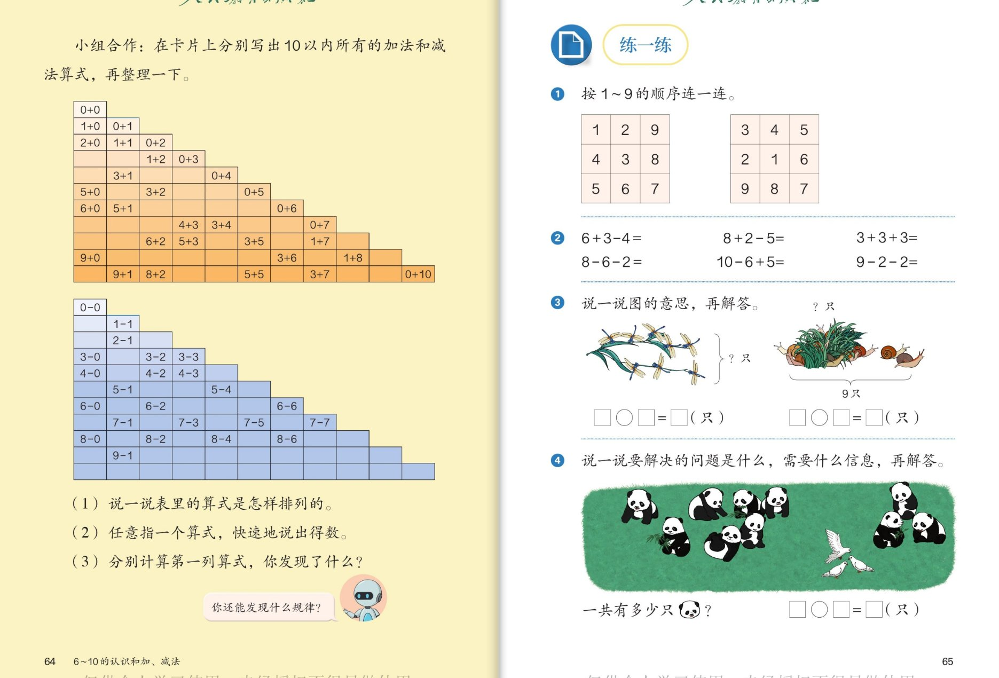
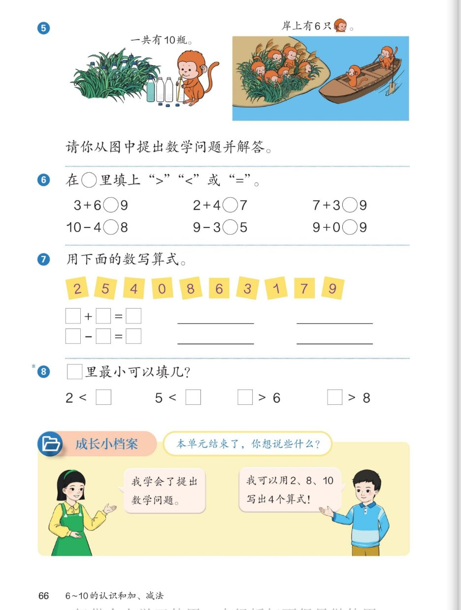

🧠 认知层 · 认识10、会算连加连减
💪 强化层 · 凑十熟练、算式有规律
🚀 拓展层 · 会解决问题、会总结
👨👩👧 使用建议：这是第三单元的收官内容，共 7 组 42 个问题。
"10"是本学期最重要的数——"凑十"是以后学习进位加法的基础，"凑十好朋友"（1和9、2和8、3和7、4和6、5和5）要背得滚瓜烂熟。
连加连减、加减混合都按从左往右的顺序算。点击问题卡片展开参考答案。
1
🔢 10 的认识 · 你知道吗（第54～55页）
数10 · 写10 · 分与合 · 算筹

📖 课本第 54～55 页 · 10 的认识 / 做一做 / 你知道吗
🧠 认知层数出 10、认识 10
🐠
认知 1：水族馆图：数一数，图上一共有多少人？几条蝠鲼（像风筝的鱼）？你是怎么数出 10 的？
看答案
参考答案：
- 老师和小朋友一共有 10 人（9 个小朋友加 1 位老师，9 再添 1 就是 10）；
- 蝠鲼有 10 条（以实际点数为准），一按顺序数：1、2、3……9、10。
💡 9 添上 1 是 10——10 是我们认识的第一个"两位数"！
📏
认知 2：尺子图：9○10、10○9，○里填 > 还是 <？方块图 9＜□，□里填几？"10"是用几个数字写成的？
看答案
参考答案：
- 9 < 10；10 > 9；方块图 9＜10；
- "10"是用 1 和 0 两个数字写成的——它是第一个两位数，1 在十位、0 在个位（以后会学到）。
💪 强化层分与合、凑十游戏
🎋
强化 1：先摆一摆，再填数：10 可以分成 9 和 □、□ 和 □……把 5 组分法全填完，并说说你是怎样填的。
看答案
参考答案：
10 可以分成：
9 和 1、8 和 2、7 和 3、6 和 4、5 和 5（还有交换的 1 和 9、2 和 8……）。
- 方法：按顺序，一边从 9 开始每次少 1，另一边从 1 开始每次多 1。
🎴
强化 2：做一做凑 10 卡片：一个小朋友出"8"，另一个马上出"2"。这个游戏的规则是什么？出"6"该对几？出"5"呢？
看答案
参考答案：
- 规则：两张卡片上的数合起来是 10（凑十）；
- 出 6 对 4；出 5 对 5；出 9 对 1；出 7 对 3；出 10 对 0。
💡 1和9、2和8、3和7、4和6、5和5 是"凑十好朋友"，要背得滚瓜烂熟——以后学进位加法全靠它！
🚀 拓展层10 在身边、古人的智慧
🖐️
拓展 1：书上问："10 还能表示生活中哪些事物的数量？"请你说一说。
看答案
参考示例（不唯一）：
- 一只手 5 根手指，两只手合起来 10 根；
- 一盒鸡蛋 10 个；一捆小棒 10 根；
- 公交车牌上的 10 路车；日历上的 10 号。
🧮
拓展 2（你知道吗）：我国古代用算筹表示数，有纵式和横式两种摆法。你能用算筹的样子写出 6 和 7 吗？猜一猜：为什么要有两种摆法？
看答案
参考答案：
- 6 = 一横＋一竖（像"T"），7 = 一横＋两竖；对照书上的图照着摆一摆；
- 猜一猜：纵横交替着摆，数位不会混在一起，看得更清楚（古人的聪明办法！）。
🌟 算筹是两千多年前我们的祖先发明的计算工具，是数学史上的伟大创造！
2
✨ 10 的加、减法 · 练一练（第56～57页）
凑十算式 · 找朋友 · 火箭倒计时

📖 课本第 56～57 页 · 10 的加、减法 / 做一做 / 练一练
🧠 认知层看图写算式
🟡
认知 1：点子图"1 和 9"：写出 1+9、9+1、10−1、10−9。为什么 1+9 和 9+1 都等于 10？
看答案
参考答案：
- 1+9=10；9+1=10；10−1=9；10−9=1；
- 交换两个加数的位置，得数不变——所以两个加法算式都对。
🤔
认知 2：想一想：5+5=□、10−5=□。为什么这一组只有两个算式？
看答案
参考答案：
- 5+5=10；10−5=5；
- 因为两部分同样多（都是 5）：交换位置还是 5+5，去掉 5 剩下的还是 5——写不出新算式。
💡 和 4+4=8 一样的道理：两部分同样多时，算式"合二为一"。
💪 强化层找朋友、列算式表
👫
强化 1：做一做"找朋友"：小朋友举着 1、2、3、4、5、6、7、8、9 的卡片，谁和谁是好朋友？规则是什么？
看答案
参考答案：
- 凑成 10 的两个数是好朋友：1—9、2—8、3—7、4—6、5—5；
- 规则：两张卡片上的数合起来是 10。
🔢
强化 2：做一做第②题：算一算 8+2、6+4、7+3 和 10−8、10−2、10−3。再完成练一练第③题"10 的分成"两行填数。
看答案
参考答案：
- 8+2=10；6+4=10；7+3=10；10−8=2；10−2=8；10−3=7；
- 第③题：上行 9、2、4、3、6、8 → 填 3；下行 1、3、5、7、9、9 → 9，每组上下两数合起来是 10。
🚀 拓展层倒计时、转盘
🚀
拓展 1：练一练第②题火箭发射："□、□、8、□、6、5、□、□、1，点火！"该怎么填？为什么发射要倒数？
看答案
参考答案：
- 从 10 倒着数：10、9、8、7、6、5、4、3、2、1（按图补齐：□=10、9 和 2、1）；
- 倒数是从大到小一个一个地数；发射指挥员用倒计时统一大家的行动。
🌈 顺着数、倒着数都要会——倒着数也是算减法的好帮手！
🎡
拓展 2（小小挑战）：练一练第⑤题："10−"转盘连着 5、3、8、1、7、2、4、6、9，把每个得数填出来。你发现了什么规律？
看答案
参考答案：
- 10−5=5；10−3=7；10−8=2；10−1=9；10−7=3；10−2=8；10−4=6；10−6=4；10−9=1；
- 规律：减去几，得数就是它的"凑十好朋友"（10−3=7，3 和 7 是好朋友）！
3
🐤 练一练 · 连加、连减（第58～59页）
数学故事 · 连加连减从左往右

📖 课本第 58～59 页 · 练一练 / 连加、连减
🧠 认知层看图列式
🍐
认知 1：第⑦题：篮子里 6 个梨，外面 3 个梨，一共有多少个？列式□○□=□。萝卜图：一共 10 根，小兔拿走几根，还剩几根？
看答案
参考答案：
- 6 + 3 = 9（个）；
- 10 − □ = □（根），按图上小兔拿走的数量填（如拿走 3 根：10−3=7 根，以图为准）。
➗
认知 2：第⑥题：10 可以分成 1 和 □，1+□=10，10−1=□；再想 10 分成 □ 和 □，写出一组加减算式。
看答案
参考答案：
- 10 分成 1 和 9；1+9=10；10−1=9；
- 还可以填：10 分成 2 和 8：2+8=10、10−2=8……（答案不唯一）。
💪 强化层连加连减，从左往右
➕
强化 1：小鸡图：原来有 5 只小鸡，先跑来 2 只，又跑来 1 只。算式 5+2+1=8 是怎么算出来的？先算什么、再算什么？
看答案
参考答案：
- 先算 5+2=7（书上在 7 下面画了线），再算 7+1=8；
- 连加要从左往右，一步一步算：先把前两个数相加，再加第三个数。
➖
强化 2：第二幅小鸡图：原来有 8 只，先跑走 2 只，又跑走 2 只。8−2−2=4 先算什么、再算什么？做一做：4+3+□=□、10−3−□=□。
看答案
参考答案：
- 先算 8−2=6（图中标 6），再算 6−2=4；
- 做一做：小棒图 4+3+2=9（以图为准）；星星图 10−3−2=5（圈走 3 个再划掉 2 个，以图为准）。
🚀 拓展层给算式讲故事
📖
拓展 1：第⑧题：看图讲一讲"7+3=10"的数学故事（图上小朋友有的跳绳、有的挖土）。7 和 3、10 分别表示什么？
看答案
参考示例：
- "公园里有 7 个小朋友在跳绳，又跑来 3 个小朋友挖土，一共有 10 个小朋友在活动。"（以图上点数为准）
- 7 是一部分，3 是另一部分，10 是合起来的总数。
🌟
拓展 2（小小挑战）：第⑨题：请你用"10−4=6"讲一个自己的数学故事（不见图、不看书，自己编！）。
看答案
参考示例（编法不唯一）：
- "妈妈买了 10 个苹果，我吃了 4 个，还剩 6 个。"
- "树上有 10 只小鸟，飞走了 4 只，还剩 6 只。"
- "我有 10 颗糖，送给妹妹 4 颗，我还剩 6 颗。"
🌟 故事里说清"原来 10、去掉 4、剩 6"，就是好故事！
4
🦢 加减混合 · 练一练（第60～61页）
又加又减 · 数字链

📖 课本第 60～61 页 · 加减混合 / 练一练
🧠 认知层又加又减怎么算
🦢
认知 1：天鹅图：湖里原有 4 只天鹅，先飞来 3 只，又飞走 2 只。算式 4+3−2=5 先算什么、再算什么？
看答案
参考答案：
- 先算 4+3=7（飞来是加，图上标 7），再算 7−2=5；
- 加减混合和连加连减一样，从左往右，先算前两个数。
🔄
认知 2：第二幅天鹅图：4−2+3=□。先算什么、再算什么？为什么这次先算减法？
看答案
参考答案：
- 先算 4−2=2，再算 2+3=5；
- 因为加减混合按从左往右的顺序算——谁在左边先算谁，不是"先加后减"。
💡 记住：加减混合，从左往右，一步一步来。
💪 强化层看图列式、口算过关
🐤
强化 1：做一做小鸭图：湖里 6 只小鸭，先游来几只、又游走几只？列式 6○□○□=□，并说说先算什么。
看答案
参考答案：
- 按图上小鸭的来去填（如：6+2−3=5 或 6+1−2=5，以图为准）；
- 先算前两个数，再用得数和第三个数算。
⏱️
强化 2：练一练第①题：2+3、8−3、4+2、5+4、5−2、6−4、2+3+4、8−3−2、4+2−4。
看答案
参考答案：
- 2+3=5；8−3=5；4+2=6；5+4=9；5−2=3；6−4=2；
- 2+3+4=9（先5再9）；8−3−2=3（先5再3）；4+2−4=2（先6再2）。
🚀 拓展层找规律、闯数字链
🐘
拓展 1：第③题动物排队：鹦鹉举牌"加 2""减 2"。熊 0+2、马 2+2、猴 4+2……接着往下说，你发现了什么规律？
看答案
参考答案：
- "加 2"一排：0+2=2、2+2=4、4+2=6、6+2=8、8+2=10；
- "减 2"一排：9−2=7、7−2=5、5−2=3、3−2=1；
- 规律：加 2 就每次多 2（跳着数：2、4、6、8、10）；减 2 每次少 2（9、7、5、3、1）。
💡 两个两个地数（2、4、6、8、10），这就是"双数"的队伍！
🔗
拓展 2（小小挑战）：第④题数字接龙：5+3→(−2)→(+4)→(−5)→(+3) 和 8−6→(+2)→(+5)→(−3)→(−4)，把每个空填出来。
看答案
参考答案：
- 第一条链：5+3=8→8−2=6→6+4=10→10−5=5→5+3=8；
- 第二条链：8−6=2→2+2=4→4+5=9→9−3=6→6−4=2；
- 方法：把每个箭头的得数当作下一格的起点，从左往右一步步算。
5
🧩 练一练 · 整理和复习（第62～63页）
填数谜题 · 古埃及数字 · 知识图

📖 课本第 62～63 页 · 练一练 / 你知道吗 / 整理和复习
🧠 认知层口算与看图列式
⏱️
认知 1：第⑤题口算：1+4+5、2+4+4、7+2−5、10−1−4、10−4−4、7−5+2。
看答案
参考答案：
- 1+4+5=10（先5再10）；2+4+4=10（先6再10）；7+2−5=4（先9再4）；
- 10−1−4=5（先9再5）；10−4−4=2（先6再2）；7−5+2=4（先2再4）。
🍌
认知 2：第⑥题：先说一说图的意思，再填空——猴子 10 根香蕉：10−3−□=□；停车场 4 辆汽车：4○□○□○□=□（辆）。
看答案
参考答案（以图为准）：
- 香蕉：原来 10 根，先拿走 3 根，又拿走 2 根：10−3−2=5；
- 汽车：原来 4 辆，先开来 2 辆，又开来 1 辆……按图上 car 的来去填：4+2+□=□；
- 关键：弄清"原来多少、来了还是走了、来了（走了）多少"。
💪 强化层填数谜题、古人数字
🧩
强化 1：第⑦题：填数，使每行、每列或每条线上的三个数相加都得 10。十字图（2、5、1 已给）和三角图（1、3、2 已给）分别怎么填？
看答案
参考答案（思路）：
- 想"三个数合起来是 10"，用凑十好朋友倒着找：10−2−5=3；10−1−2=7……
- 先从已知两个数的行/列填起，每填一个就检查那行那列是否都得 10。
💡 这是最早的"数字谜题"（数阵），考验的是凑十和有序思考！
🏺
强化 2：你知道吗：古埃及人用 | 表示 1、∩ 表示 10。∩−||（10 减 2）等于几？用埃及数字算一算 ||||−|||=□、∩−|||=□。
看答案
参考答案：
- ∩−||=10−2=8；
- ||||−|||=4−3=1；∩−|||=10−3=7；
- 有趣的是：3000 多年前的古埃及和古代中国，都想到用一根根小棒来表示数——数学的思路全世界是相通的！
🚀 拓展层整理知识、画知识图
🗺️
拓展 1：整理和复习：书上同学的知识图有"比大小""分与合""加、减法"三块。看着知识图，把每块再补充一两个例子。
看答案
参考示例：
- 比大小：7＞6、6＜7，还可以补 9＞8、10＞9；
- 分与合：10 可以分成 9 和 1、8 和 2……还可以补 7 和 3、6 和 4；
- 加减法：9+1=10、10−9=1、3+4+3=10、9−5+4=8，还可以补 10−4−4=2、2+3+4=9。
🎨
拓展 2（小小总结家）：本单元你学到了哪些知识？学着书上的样子，画一张自己的"知识图"，再向大家展示。
看答案
参考要点（画其中几块即可）：
- 认识 6~10，知道它们的顺序（数轴 0~10）；
- 6~10 的分与合（重点：凑十好朋友）；
- 6~10 的加减法、连加连减、加减混合（从左往右算）；
- 会用三步法解决问题，还会自己提出数学问题。
🌟 画知识图就是把学过的知识"串成串"，越串越清楚！
6
🗂️ 整理算式表 · 练一练（第64～65页）
算式阶梯表 · 找规律 · 说图意

📖 课本第 64～65 页 · 小组合作整理算式表 / 练一练
🧠 认知层算式表是怎么排的
📋
认知 1：加法算式表：(1) 说一说表里的算式是怎样排列的？横着看、竖着看各有什么特点？
看答案
参考答案：
- 竖着看（第一列）：0+0、0+1、0+2……0+10，第一个加数都是 0；
- 斜着看：每条斜线上的算式得数相同（0+0 得 0；0+1、1+0 得 1；0+2、1+1、2+0 得 2……）；
- 表是按得数从小到大一层一层排的，像楼梯！
➖
认知 2：减法算式表：1−1、2−1、3−0……它是怎样排列的？每一行的得数有什么变化？
看答案
参考答案：
- 也是楼梯形：每一层得数相同，从 0−0 得 0 开始，一层比一层大；
- 同一行里，减号前面的数每次多 1，减号后面的数也每次多 1，得数不变（如 3−2、4−3、5−4 都得 1）。
💪 强化层快速口算、发现规律
🎯
强化 1：(2) 任指表中的一个算式，快速说出得数。和爸爸妈妈比赛：指 10 个算式，看谁又对又快！
看答案
参考答案（方法）：
- 快速口算的秘诀：想分与合——比如 7+2，想"7 和 2 组成 9"，直接得 9；
- 10 的加减法用"凑十好朋友"最快。
🌟 全部算式都能直接说出得数，就是"10 以内加减法过关"！
🔍
强化 2：(3) 分别计算第一列算式，你发现了什么？还能发现什么规律？
看答案
参考答案：
- 加法表第一列：0+0、0+1、0+2……0+10，得数依次是 0、1、2……10（得数=第二个加数）；
- 减法表第一列：1−1、2−1、3−1……得数每次多 1；
- 其他发现（不唯一）："几加 0 还得几""几减 0 还得几""同数相减得 0"……
🚀 拓展层看图解答、说清需要什么
⏱️
拓展 1：练一练第②题：6+3−4、8+2−5、3+3+3、8−6−2、10−6+5、9−2−2。
看答案
参考答案：
- 6+3−4=5（先9）；8+2−5=5（先10）；3+3+3=9（先6再9）；
- 8−6−2=0（先2再0）；10−6+5=9（先4再9）；9−2−2=5（先7再5）。
🐼
拓展 2（最难挑战）：第③④题：先说一说图的意思 / 要解决什么问题、需要什么信息，再解答——蜻蜓蜗牛图；熊猫鸽子图"一共有多少只🐼"（□○□=□）。
看答案
参考答案（以图上点数为准）：
- 蜻蜓图：草叶上 4 只 + 飞着 3 只？列加法；蜗牛图：一共 9 只，走了一些求剩下，列减法；
- 熊猫图：地上有 □ 只，又跑来 □ 只（或两处各有几只），求一共：□+□=□（只）；
- 关键：像书上说的，先想清楚"要解决什么问题、需要什么信息"，再找数列式——这是解决问题的完整思路！
7
🏁 练一练 · 成长小档案（第66页）
比大小 · 写算式 · 单元总结

📖 课本第 66 页 · 练一练（第 5～8 题）/ 成长小档案
🧠 认知层比大小、写算式
⚖️
认知 1：第⑥题：在○里填上">""<"或"="：3+6○9、2+4○7、7+3○9、10−4○8、9−3○5、9+0○9。
看答案
参考答案：
- 3+6=9，9=9 填 =；2+4=6，6＜7 填 <；7+3=10，10＞9 填 >；
- 10−4=6，6＜8 填 <；9−3=6，6＞5 填 >；9+0=9，9=9 填 =。
💡 先把○两边算出来，再比大小——"先算后比"！
🎴
认知 2：第⑦题：用数字卡片 2、5、4、0、8、6、3、1、7、9 写出加法和减法算式。你能写出几道？
看答案
参考示例：
- 加法：2+5=7、3+4=7、6+3=9、5+4=9、2+8=10……
- 减法：8−5=3、9−4=5、7−2=5、10 除外（没有卡片 10）；6−0=6……
🌈 注意：三张卡片要能组成"一家人"（如 2、5、7）才能写出一加一减。
💪 强化层提问题、最小填几
🐵
强化 1：第⑤题：小猴子搬水（一共有 10 瓶）、岸上 6 只猴、船里几只猴——请你从图中提出数学问题并解答。
看答案
参考示例（以图为准）：
- "一共有 10 瓶水，已经喝完/搬走 3 瓶，还剩几瓶？"（10−3=7）
- "岸上有 6 只猴，船上有 3 只，一共有几只猴？"（6+3=9）
- "岸上的猴比船上的多几只？"（6−3=3）
🪜
强化 2：第⑧题（带＊的挑战题）：□里最小可以填几？2＜□、5＜□、□＞6、□＞8。
看答案
参考答案：
- 2＜□：比 2 大的数里最小的是 3；
- 5＜□：填 6；
- □＞6：比 6 大的数里最小的是 7；
- □＞8：填 9（10 也可以，但最小是 9）。
💡 "最小可以填几"＝找"刚好满足条件"的那个数——在尺子上找它右边（左边）紧挨着的数。
🚀 拓展层成长小档案
🌱
拓展 1：书上小朋友说："我可以用 2、8、10 写出 4 个算式！"是哪 4 个？你也选三个数试一试。
看答案
参考答案：
- 2+8=10、8+2=10、10−2=8、10−8=2（2、8、10 是一家人）；
- 自己选：如 3、6、9 → 3+6=9、6+3=9、9−3=6、9−6=3；
- 注意：选的三个数必须"两个小的合起来是大的"才行，如 1、2、4 就不行（1+2=3≠4）。
🗣️
拓展 2（成长小档案）：第三单元结束了，你想说些什么？说一说自己最大的收获，还有想继续努力的地方。
看答案
参考示例：
- "我认识了 6~10，会写、会数、会比大小了！"
- "我背熟了凑十好朋友：1和9、2和8、3和7、4和6、5和5。"
- "我学会了连加连减、加减混合，知道要从左往右算。"
- "我能用三步法解决问题，还会自己提数学问题！"
- 想努力的："口算再快一点""看图列式不再马虎"。
🌟 会总结的孩子，进步最快！